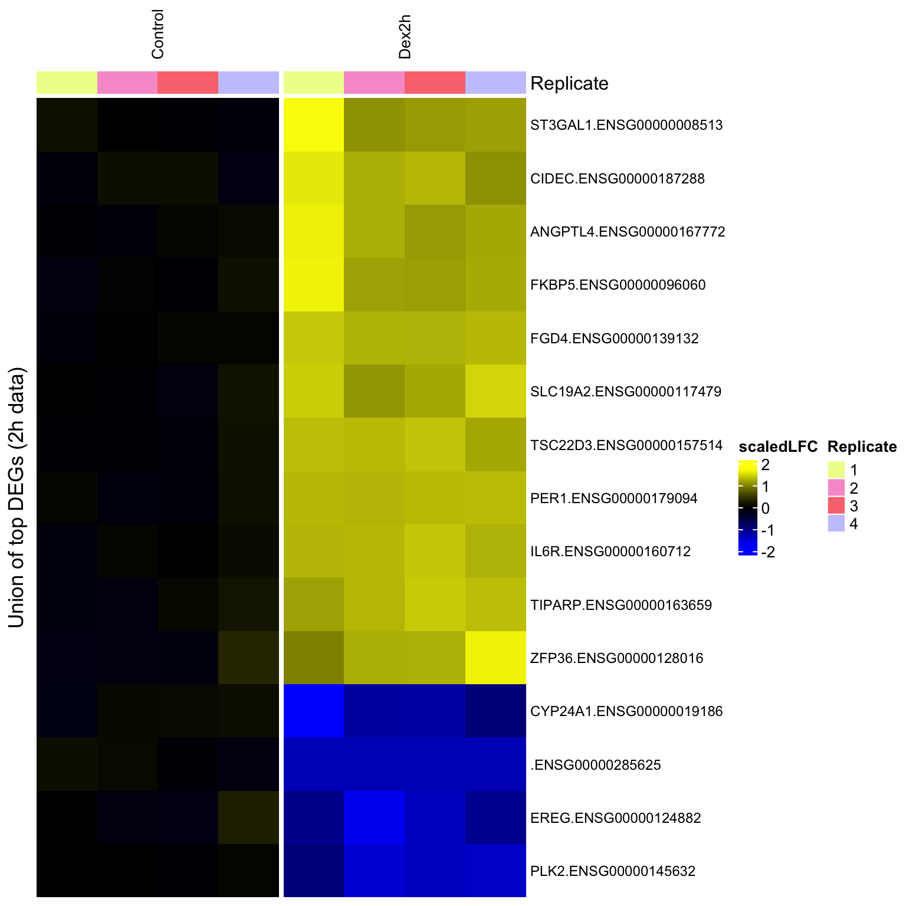
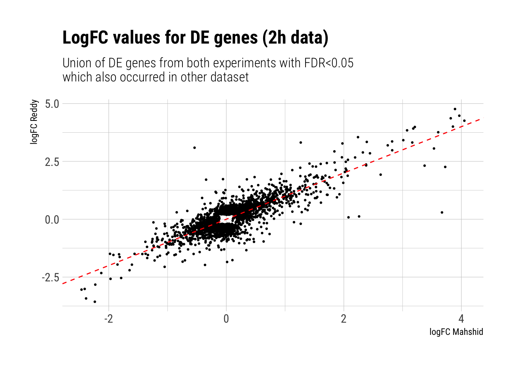

Q1b: DE Gene overlap for 2h data
Dominique Paul
2022-09-22
Last updated: 2022-09-22
Checks: 7 0
Knit directory: GR-PROTAC-analysis/analysis/
This reproducible R Markdown analysis was created with workflowr (version 1.7.0). The Checks tab describes the reproducibility checks that were applied when the results were created. The Past versions tab lists the development history.
Great! Since the R Markdown file has been committed to the Git repository, you know the exact version of the code that produced these results.
Great job! The global environment was empty. Objects defined in the global environment can affect the analysis in your R Markdown file in unknown ways. For reproduciblity it’s best to always run the code in an empty environment.
The command set.seed(20220515) was run prior to running the code in the R Markdown file. Setting a seed ensures that any results that rely on randomness, e.g. subsampling or permutations, are reproducible.
Great job! Recording the operating system, R version, and package versions is critical for reproducibility.
Nice! There were no cached chunks for this analysis, so you can be confident that you successfully produced the results during this run.
Great job! Using relative paths to the files within your workflowr project makes it easier to run your code on other machines.
Great! You are using Git for version control. Tracking code development and connecting the code version to the results is critical for reproducibility.
The results in this page were generated with repository version 324fe48. See the Past versions tab to see a history of the changes made to the R Markdown and HTML files.
Note that you need to be careful to ensure that all relevant files for the analysis have been committed to Git prior to generating the results (you can use wflow_publish or wflow_git_commit). workflowr only checks the R Markdown file, but you know if there are other scripts or data files that it depends on. Below is the status of the Git repository when the results were generated:
Ignored files:
Ignored: .DS_Store
Ignored: analysis/.DS_Store
Ignored: analysis/.Rhistory
Ignored: analysis/docs/.DS_Store
Ignored: data/.DS_Store
Ignored: data/00_paper_figures/.DS_Store
Ignored: data/EOS_files/
Ignored: data/Formatted_Candidate_ETG_20200305_TAD10Kb.tsv
Ignored: data/reddy_bigwig_DEX12h_r123.bigWig
Ignored: data/reddy_bigwig_DEX2h_r123.bigWig
Ignored: data/reddy_bigwig_DEX6h_r123.bigWig
Ignored: data/reddy_bigwig_JUNB_DEX12h_r123.bigWig
Ignored: data/reddy_rna_DEX2h_r1.tsv
Ignored: data/reddy_rna_DEX2h_r2.tsv
Ignored: data/reddy_rna_DEX2h_r3.tsv
Ignored: data/reddy_rna_DEX2h_r4.tsv
Ignored: data/single_replicate_peaks/.DS_Store
Ignored: data/single_replicate_peaks/control/
Ignored: data/single_replicate_peaks/dex12h/
Ignored: data/single_replicate_peaks/dex2h/
Ignored: data/single_replicate_peaks/peaks/.DS_Store
Ignored: output/.DS_Store
Ignored: output/Files/
Unstaged changes:
Modified: analysis/01_Results.Rmd
Modified: analysis/Q3-PROTAC-reversal.Rmd
Modified: analysis/admin.Rmd
Modified: analysis/index.Rmd
Deleted: data/00_paper_figures/6b.png
Deleted: data/00_paper_figures/6c1.pdf
Deleted: data/00_paper_figures/6c1.png
Deleted: data/00_paper_figures/6c2a.pdf
Deleted: data/00_paper_figures/6c2a.png
Deleted: data/00_paper_figures/6c2b.pdf
Deleted: data/00_paper_figures/6c2b.png
Deleted: data/00_paper_figures/6c2c.pdf
Deleted: data/00_paper_figures/6c2c.png
Deleted: data/00_paper_figures/6c2d.pdf
Deleted: data/00_paper_figures/6c2d.png
Deleted: data/00_paper_figures/6d1.pdf
Deleted: data/00_paper_figures/6d1.png
Deleted: data/00_paper_figures/6d2a.pdf
Deleted: data/00_paper_figures/6d2a.png
Deleted: data/00_paper_figures/6d2b.pdf
Deleted: data/00_paper_figures/6d2b.png
Deleted: data/00_paper_figures/6d2c.pdf
Deleted: data/00_paper_figures/6d2c.png
Deleted: data/00_paper_figures/6d2d.pdf
Deleted: data/00_paper_figures/6d2d.png
Deleted: data/00_paper_figures/7b1.pdf
Deleted: data/00_paper_figures/7b2.pdf
Deleted: data/00_paper_figures/fig7b.pdf
Note that any generated files, e.g. HTML, png, CSS, etc., are not included in this status report because it is ok for generated content to have uncommitted changes.
These are the previous versions of the repository in which changes were made to the R Markdown (analysis/Q1b-Gene-overlap-2h.Rmd) and HTML (docs/Q1b-Gene-overlap-2h.html) files. If you’ve configured a remote Git repository (see ?wflow_git_remote), click on the hyperlinks in the table below to view the files as they were in that past version.
| File | Version | Author | Date | Message |
|---|---|---|---|---|
| Rmd | 324fe48 | dominique-paul-uzh | 2022-09-22 | updates september |
| html | 324fe48 | dominique-paul-uzh | 2022-09-22 | updates september |
| Rmd | 9d91c8d | dominique-paul-uzh | 2022-09-21 | updates september |
| Rmd | 4255935 | dominique-paul-uzh | 2022-09-21 | updates september |
| html | 4255935 | dominique-paul-uzh | 2022-09-21 | updates september |
| Rmd | 748f409 | dominique-paul-uzh | 2022-09-19 | updates september |
Question 1: Similarity of our RNA data with the Reddy data
Load Reddy data
control_r1 <- read.csv("../data/reddy_rna_control_r1.tsv", sep="\t")
control_r2 <- read.csv("../data/reddy_rna_control_r2.tsv", sep="\t")
control_r3 <- read.csv("../data/reddy_rna_control_r3.tsv", sep="\t")
control_r4 <- read.csv("../data/reddy_rna_control_r4.tsv", sep="\t")
treatment_r1 <- read.csv("../data/reddy_rna_DEX2h_r1.tsv", sep="\t")
treatment_r2 <- read.csv("../data/reddy_rna_DEX2h_r2.tsv", sep="\t")
treatment_r3 <- read.csv("../data/reddy_rna_DEX2h_r3.tsv", sep="\t")
treatment_r4 <- read.csv("../data/reddy_rna_DEX2h_r4.tsv", sep="\t")
ensembl <- useEnsembl(biomart = "genes", dataset = "hsapiens_gene_ensembl")
replace_ensg_by_hgnc <- function(entrez_ids){
# pass a list of ensembl genes and get a table with corresponding hgnc gene names
# Very useful reference:
# https://bioconductor.org/packages/release/bioc/vignettes/biomaRt/inst/doc/accessing_ensembl.html
bm_results <- getBM(attributes = c('ensembl_gene_id', 'hgnc_symbol', 'chromosome_name'),
filters = 'ensembl_gene_id',
values = entrez_ids,
mart = ensembl)
dups <- duplicated(bm_results$ensembl_gene_id)
bm_results <- bm_results[!dups,]
cat(paste0("Removed ", sum(dups), " duplicates."))
rownames(bm_results) <- bm_results$ensembl_gene_id
bm_results
}
prefiltering <- function(dataset){
# We filter for ensemble genes
dataset <- dataset[grep("ENSG", dataset$gene_id),]
# we remove transcripts marked as pseudoautosomal regions
dataset <- dataset[-grep("PAR_Y", dataset$gene_id),]
# we short the ensembl name to exclude the version number of the gene id
dataset$gene_id_short = sapply(strsplit(dataset$gene_id, ".", fixed=T), function(x) x[1])
dataset
}
# Apply preprocessing to all RNA datasets
control_r1 <- prefiltering(control_r1)
control_r2 <- prefiltering(control_r2)
control_r3 <- prefiltering(control_r3)
control_r4 <- prefiltering(control_r4)
treatment_r1 <- prefiltering(treatment_r1)
treatment_r2 <- prefiltering(treatment_r2)
treatment_r3 <- prefiltering(treatment_r3)
treatment_r4 <- prefiltering(treatment_r4)
# build a list of the dataframes
data_list <- list("c1"=control_r1, "c2"=control_r2, "c3"=control_r3, "c4"=control_r4,
"t1"=treatment_r1, "t2"=treatment_r2, "t3"=treatment_r3, "t4"=treatment_r4)
# get union of all gene names with non-zero transcripts
gene_names <- lapply(data_list, function(dataset){
dataset[dataset$TPM > 0, "gene_id_short"]
}) %>% purrr::reduce(c)
unique_gene_names <- unique(gene_names)Configure summarised experiment for DE analysis
# construct a SE from all experiments
expected_counts <- lapply(data_list, function(dataset){
rownames(dataset) <- dataset$gene_id_short
dataset <- dataset[unique_gene_names,"expected_count"]
}) %>% purrr::reduce(cbind)
tpm_counts <- lapply(data_list, function(dataset){
rownames(dataset) <- dataset$gene_id_short
dataset <- dataset[unique_gene_names,"TPM"]
}) %>% purrr::reduce(cbind)
colnames(expected_counts) <- colnames(tpm_counts) <- c("C1", "C2", "C3", "C4", "T1", "T2", "T3", "T4")
SE <- SummarizedExperiment(assays=list("counts"=expected_counts, "TPM"=tpm_counts))
# Add row data
rownames(SE) <- unique_gene_names
rowData(SE)$gene_id <- unique_gene_names
# Fetch HGNC names for the genes by their ENSG names
hgnc_table <- replace_ensg_by_hgnc(unique_gene_names)Removed 1 duplicates.overlapping_genes <- unique_gene_names[unique_gene_names %in% rownames(hgnc_table)]
# set the ENSG name per default and then replace by HGNC where possible
rowData(SE)$gene_name <- unique_gene_names
rowData(SE)[overlapping_genes, "gene_name"] <- hgnc_table[overlapping_genes,"hgnc_symbol"]
# set rownames to combination of ENSG and HGNC name.
rownames(SE) <- paste0(rowData(SE)$gene_name, ".", rowData(SE)$gene_id)
# Add coldata
colData(SE)$Replicate <- factor(c(1,2,3,4,1,2,3,4))
colData(SE)$Treatment <- c(rep("Control",4), rep("Dex2h", 4))Run DE analysis on Reddy data
# normalise expression values by library size
dds <- calcNormFactors(DGEList(assay(SE)))
assays(SE)$logcpm <- log1p(cpm(dds)) # TODO: Check this
# Filter rows which do not have more than 20 counts for a given condition
dds <- dds[filterByExpr(dds, model.matrix(~SE$Treatment), min.count=20),]
# Only keep rows with sufficient reads
SE <- SE[row.names(dds),]
# take rows with highest total rna expression values across all samples
tmp <- assays(SE)$TPM[order(-rowSums(assays(SE)$TPM))[1:2000],]
# We use singular value decomposition as a dimension reduction
rd <- BiocSingular::runExactSVD(tmp, center=FALSE, scale=FALSE)$v
colnames(rd) <- paste0("C", seq_len(ncol(rd)))
d <- cbind(as.data.frame(colData(SE)), rd[,1:5])
ggplot(d, aes(C1, C2, colour=Treatment)) + geom_point()
| Version | Author | Date |
|---|---|---|
| 4255935 | dominique-paul-uzh | 2022-09-21 |
# Adds top two columns from surrogate variable analysis to column data. We use these for our DE experiment below as nuisance variables
SE <- svacor(SE, ~Treatment, n.sv=2)Using variance-stabilizing transformationconverting counts to integer modeWarning in DESeqDataSet(se, design = design, ignoreRank): some variables in
design formula are characters, converting to factorsNumber of significant surrogate variables is: 2
Iteration (out of 5 ):1 2 3 4 5 # Rename some of the variables in the colummn data
SE$Treatment <- relevel(factor(SE$Treatment), "Control") # reorder factors
# SE$condition2 <- SE$Treatment
# levels(SE$condition2) <- gsub("^18h DMSO$|18h untreated","control",levels(SE$condition2))
# SE$isInhibited <- grepl("Cort113|KH-103|MIF", SE$condition2)
# SE$isDEX <- grepl("DEX", SE$condition2)
# Column that combines treatment info about control/DEX/inhibited/DEX+inhibited
# SE$condType <- factor(paste0(as.integer(SE$isDEX), as.integer(SE$isInhibited)))
# levels(SE$condType) <- c("control", "inhibited", "DEX", "DEX+inhibited")
metadata(SE)$default_view <- list( assay="scaledLFC", groupvar="Treatment", colvar="condition",
top_annotation=c("condType") )
mm <- model.matrix(~SV1+SV2+Treatment, data=as.data.frame(colData(SE)))
dds <- estimateDisp(dds, mm)
conds <- grep("Treatment", colnames(mm), value=TRUE)
names(conds) <- gsub("Treatment","",conds)
fit <- glmFit(dds,mm)
res <- lapply(conds, FUN=function(x){
y <- as.data.frame(topTags(glmLRT(fit,x), Inf))
attr(y, "description") <- paste0(gsub("Treatment","",x), " vs. Control")
y
})
for(f in names(res)){
rowData(SE)[[paste0("DEA.",f)]] <-
dround(res[[f]][row.names(SE),c(1,2,4,5)], 2, TRUE)
}
x <- res$Dex2h
topDegs <- head(row.names(x)[x$FDR<0.01],15)
# levels(SE$Treatment) <- gsub("> ",">\n", levels(SE$Treatment))
# SE$Treatment <- factor(SE$Treatment,
# unique(c("18h untreated","18h DMSO",levels(SE$Treatment))))
SE <- log2FC(SE, "logcpm", SE$Treatment=="Control")
saveRDS(file="../data/EOS_files/Q1_SummExp_2h.rds", SE)sechm::sechm(SE, topDegs, assay="scaledLFC", gaps_at="Treatment", breaks=TRUE,
top_annotation="Replicate", row_title="Union of top DEGs (2h data)", show_rownames=TRUE,
row_names_gp=gpar(fontsize=9), column_title_gp=gpar(fontsize=10),
column_title_rot=90)
| Version | Author | Date |
|---|---|---|
| 4255935 | dominique-paul-uzh | 2022-09-21 |
Compare DE genes between Reddy and our data
First, we use a simple Venn diagram to compare how many of our significant DE genes are also significantly DE in the Reddy lab’s. The Venn diagram also shows us whether there are any genes that are DE in opposing directions.
res_int_all <- readRDS(file="../data/results/DE_our_data.rds")
names(res_int_all) [1] "16h Cort113 > 2h DEX+Cort113" "16h DMSO > 2h DEX+DMSO"
[3] "16h KH-103 > 2h DEX+KH-103" "16h MIF > 2h DEX+MIF"
[5] "18h Cort113" "18h KH-103"
[7] "18h MIF" "2h DEX > 16h DEX+Cort113"
[9] "2h DEX > 16h DEX+DMSO" "2h DEX > 16h DEX+KH-103"
[11] "2h DEX > 16h DEX+MIF" res_int <- res_int_all$`16h DMSO > 2h DEX+DMSO`
res_int_significant <- res_int[res_int$FDR < 0.05,]
res_ext <- res$Dex2h
# change rownames in dataframe
rnames <- rowData(SE)[rownames(res_ext), "gene_name"]
rnames[rnames==""] <- rownames(res_ext)[rnames==""]
# some HGNCs occur twice
idx <- which(duplicated(rnames) | duplicated(rnames, fromLast=TRUE))
rnames[idx] <- rownames(res_ext)[idx]
# change rownames
rownames(res_ext) <- rnames
# get significant genes
res_ext_significant <- res_ext[res_ext$FDR < 0.05,]
# get overlap
ours_up <- rownames(res_int_significant[res_int_significant$logFC > 0,])
ours_down <- rownames(res_int_significant[res_int_significant$logFC < 0,])
reddy_up <- rownames(res_ext_significant[res_ext_significant$logFC > 0,])
reddy_down <- rownames(res_ext_significant[res_ext_significant$logFC < 0,])
# Print genes with opposing effect
up_mahshid_down_reddy <- intersect(ours_up, reddy_down)
cat(paste0("Up in our data, down in reddy data (n=", length(up_mahshid_down_reddy), ")"))Up in our data, down in reddy data (n=2)print(up_mahshid_down_reddy)[1] "METTL21A" "KLF2" down_mahshid_up_reddy <- intersect(ours_down, reddy_up)
cat(paste0("Down in our data, up in reddy data (n=", length(down_mahshid_up_reddy), ")"))Down in our data, up in reddy data (n=5)print(down_mahshid_up_reddy)[1] "SWAP70" "RNF25" "BRPF1" "LBH" "ZNF3" # Create venn diagram
myCol <- RColorBrewer::brewer.pal(4, "Pastel2")
venn.diagram(
x = list(ours_up, ours_down, reddy_up, reddy_down),
category.names = c("Mahshid up" , "Mahshid down", "Reddy up", "Reddy down"),
filename = '../docs/assets/1_venn_diagram_2h.tiff',
imagetype="tiff",
output=FALSE,
disable.logging=TRUE,
# Circles
lwd = 2,
# lty = 'blank',
fill = myCol,
# Numbers
cex = .6,
fontface = "bold",
fontfamily = "sans",
# Set names
cat.cex = 0.6,
cat.fontface = "bold",
cat.default.pos = "outer",
cat.fontfamily = "sans",
)INFO [2022-09-22 11:16:05] $x
INFO [2022-09-22 11:16:05] list(ours_up, ours_down, reddy_up, reddy_down)
INFO [2022-09-22 11:16:05]
INFO [2022-09-22 11:16:05] $category.names
INFO [2022-09-22 11:16:05] c("Mahshid up", "Mahshid down", "Reddy up", "Reddy down")
INFO [2022-09-22 11:16:05]
INFO [2022-09-22 11:16:05] $filename
INFO [2022-09-22 11:16:05] [1] "../docs/assets/1_venn_diagram_2h.tiff"
INFO [2022-09-22 11:16:05]
INFO [2022-09-22 11:16:05] $imagetype
INFO [2022-09-22 11:16:05] [1] "tiff"
INFO [2022-09-22 11:16:05]
INFO [2022-09-22 11:16:05] $output
INFO [2022-09-22 11:16:05] [1] FALSE
INFO [2022-09-22 11:16:05]
INFO [2022-09-22 11:16:05] $disable.logging
INFO [2022-09-22 11:16:05] [1] TRUE
INFO [2022-09-22 11:16:05]
INFO [2022-09-22 11:16:05] $lwd
INFO [2022-09-22 11:16:05] [1] 2
INFO [2022-09-22 11:16:05]
INFO [2022-09-22 11:16:05] $fill
INFO [2022-09-22 11:16:05] myCol
INFO [2022-09-22 11:16:05]
INFO [2022-09-22 11:16:05] $cex
INFO [2022-09-22 11:16:05] [1] 0.6
INFO [2022-09-22 11:16:05]
INFO [2022-09-22 11:16:05] $fontface
INFO [2022-09-22 11:16:05] [1] "bold"
INFO [2022-09-22 11:16:05]
INFO [2022-09-22 11:16:05] $fontfamily
INFO [2022-09-22 11:16:05] [1] "sans"
INFO [2022-09-22 11:16:05]
INFO [2022-09-22 11:16:05] $cat.cex
INFO [2022-09-22 11:16:05] [1] 0.6
INFO [2022-09-22 11:16:05]
INFO [2022-09-22 11:16:05] $cat.fontface
INFO [2022-09-22 11:16:05] [1] "bold"
INFO [2022-09-22 11:16:05]
INFO [2022-09-22 11:16:05] $cat.default.pos
INFO [2022-09-22 11:16:05] [1] "outer"
INFO [2022-09-22 11:16:05]
INFO [2022-09-22 11:16:05] $cat.fontfamily
INFO [2022-09-22 11:16:05] [1] "sans"
INFO [2022-09-22 11:16:05]
INFO [2022-09-22 11:16:05] [[16]]
INFO [2022-09-22 11:16:05]
INFO [2022-09-22 11:16:05] [1] 1cp ../docs/assets/1_venn_diagram_2h.tiff ../docs/00_paper_figures/6a2_venn.tiffUsing .bash_profilePlot logFCs for both experiments for DE gene union
We next compare the log fold change in both datasets for all DE genes (union of the lists from both experiments)
union_DE_genes <- unique(c(rownames(res_ext_significant), rownames(res_int_significant)))
weird <- intersect(union_DE_genes, rownames(res_ext))
# in union_DE_genes but not in res_ext
d_plot <- data.frame("logFC_reddy"=res_ext[union_DE_genes,"logFC"],
"logFC_mahshid"=res_int[union_DE_genes,"logFC"],
row.names=union_DE_genes)
d_plot <- d_plot[rowSums(is.na(d_plot)) == 0,]
plot_lfc <- ggplot(d_plot) +
geom_point(aes(x=logFC_mahshid, y=logFC_reddy), size=0.5) +
geom_abline(linetype="dashed", color="red") +
theme_ipsum_rc() +
labs(title="LogFC values for DE genes (2h data)", subtitle="Union of DE genes from both experiments with FDR<0.05 \nwhich also occurred in other dataset",
x="logFC Mahshid", y="logFC Reddy")
plot_lfc
| Version | Author | Date |
|---|---|---|
| 4255935 | dominique-paul-uzh | 2022-09-21 |
ggsave(file="../docs/assets/2_logFC_Mahshid_Reddy_2h.pdf", plot_lfc)Saving 7 x 5 in imageWarning in grid.Call(C_textBounds, as.graphicsAnnot(x$label), x$x, x$y, : font
width unknown for character 0x2d
Warning in grid.Call(C_textBounds, as.graphicsAnnot(x$label), x$x, x$y, : font
width unknown for character 0x2d
Warning in grid.Call(C_textBounds, as.graphicsAnnot(x$label), x$x, x$y, : font
width unknown for character 0x2d
Warning in grid.Call(C_textBounds, as.graphicsAnnot(x$label), x$x, x$y, : font
width unknown for character 0x2d
Warning in grid.Call(C_textBounds, as.graphicsAnnot(x$label), x$x, x$y, : font
width unknown for character 0x2d
Warning in grid.Call(C_textBounds, as.graphicsAnnot(x$label), x$x, x$y, : font
width unknown for character 0x2d
Warning in grid.Call(C_textBounds, as.graphicsAnnot(x$label), x$x, x$y, : font
width unknown for character 0x2d
Warning in grid.Call(C_textBounds, as.graphicsAnnot(x$label), x$x, x$y, : font
width unknown for character 0x2d
Warning in grid.Call(C_textBounds, as.graphicsAnnot(x$label), x$x, x$y, : font
width unknown for character 0x2d
Warning in grid.Call(C_textBounds, as.graphicsAnnot(x$label), x$x, x$y, : font
width unknown for character 0x2d
Warning in grid.Call(C_textBounds, as.graphicsAnnot(x$label), x$x, x$y, : font
width unknown for character 0x2d
Warning in grid.Call(C_textBounds, as.graphicsAnnot(x$label), x$x, x$y, : font
width unknown for character 0x2d
Warning in grid.Call(C_textBounds, as.graphicsAnnot(x$label), x$x, x$y, : font
width unknown for character 0x2d
Warning in grid.Call(C_textBounds, as.graphicsAnnot(x$label), x$x, x$y, : font
width unknown for character 0x2d
Warning in grid.Call(C_textBounds, as.graphicsAnnot(x$label), x$x, x$y, : font
width unknown for character 0x2d
Warning in grid.Call(C_textBounds, as.graphicsAnnot(x$label), x$x, x$y, : font
width unknown for character 0x2d
Warning in grid.Call(C_textBounds, as.graphicsAnnot(x$label), x$x, x$y, : font
width unknown for character 0x2d
Warning in grid.Call(C_textBounds, as.graphicsAnnot(x$label), x$x, x$y, : font
width unknown for character 0x2dWarning in grid.Call.graphics(C_text, as.graphicsAnnot(x$label), x$x, x$y, :
font width unknown for character 0x2dWarning in grid.Call(C_textBounds, as.graphicsAnnot(x$label), x$x, x$y, : font
width unknown for character 0x2d
Warning in grid.Call(C_textBounds, as.graphicsAnnot(x$label), x$x, x$y, : font
width unknown for character 0x2d
Warning in grid.Call(C_textBounds, as.graphicsAnnot(x$label), x$x, x$y, : font
width unknown for character 0x2d
Warning in grid.Call(C_textBounds, as.graphicsAnnot(x$label), x$x, x$y, : font
width unknown for character 0x2d
Warning in grid.Call(C_textBounds, as.graphicsAnnot(x$label), x$x, x$y, : font
width unknown for character 0x2d
Warning in grid.Call(C_textBounds, as.graphicsAnnot(x$label), x$x, x$y, : font
width unknown for character 0x2d
Warning in grid.Call(C_textBounds, as.graphicsAnnot(x$label), x$x, x$y, : font
width unknown for character 0x2d
Warning in grid.Call(C_textBounds, as.graphicsAnnot(x$label), x$x, x$y, : font
width unknown for character 0x2d
Warning in grid.Call(C_textBounds, as.graphicsAnnot(x$label), x$x, x$y, : font
width unknown for character 0x2d
Warning in grid.Call(C_textBounds, as.graphicsAnnot(x$label), x$x, x$y, : font
width unknown for character 0x2dWarning in grid.Call.graphics(C_text, as.graphicsAnnot(x$label), x$x, x$y, :
font width unknown for character 0x2dSave data
saveRDS(list("Reddy_all"=res_ext, "Reddy_significant"=res_ext_significant, "Mahshid_all"=res_int, "Mahshid_significant"=res_int_significant, "union_DE_genes"=union_DE_genes, "logFC_plot_data"=d_plot),
file="../data/EOS_files/Q1b_EOS.rds")
sessionInfo()R version 4.1.0 (2021-05-18)
Platform: x86_64-apple-darwin17.0 (64-bit)
Running under: macOS Big Sur 10.16
Matrix products: default
BLAS: /Library/Frameworks/R.framework/Versions/4.1/Resources/lib/libRblas.dylib
LAPACK: /Library/Frameworks/R.framework/Versions/4.1/Resources/lib/libRlapack.dylib
locale:
[1] en_US.UTF-8/en_US.UTF-8/en_US.UTF-8/C/en_US.UTF-8/en_US.UTF-8
attached base packages:
[1] grid stats4 stats graphics grDevices utils datasets
[8] methods base
other attached packages:
[1] hrbrthemes_0.8.6 VennDiagram_1.7.3
[3] futile.logger_1.4.3 SEtools_1.8.0
[5] edgeR_3.36.0 limma_3.50.3
[7] SummarizedExperiment_1.24.0 Biobase_2.54.0
[9] GenomicRanges_1.46.1 GenomeInfoDb_1.30.1
[11] IRanges_2.28.0 S4Vectors_0.32.4
[13] BiocGenerics_0.40.0 MatrixGenerics_1.6.0
[15] matrixStats_0.62.0 dplyr_1.0.9
[17] biomaRt_2.50.3 ggplot2_3.3.6
loaded via a namespace (and not attached):
[1] circlize_0.4.15 workflowr_1.7.0 systemfonts_1.0.4
[4] BiocFileCache_2.2.1 splines_4.1.0 BiocParallel_1.28.3
[7] sva_3.42.0 digest_0.6.29 foreach_1.5.2
[10] htmltools_0.5.2 magick_2.7.3 fansi_1.0.3
[13] magrittr_2.0.3 memoise_2.0.1 ScaledMatrix_1.2.0
[16] cluster_2.1.3 doParallel_1.0.17 openxlsx_4.2.5
[19] ComplexHeatmap_2.10.0 Biostrings_2.62.0 annotate_1.72.0
[22] extrafont_0.18 extrafontdb_1.0 prettyunits_1.1.1
[25] colorspace_2.0-3 blob_1.2.3 rappdirs_0.3.3
[28] textshaping_0.3.6 xfun_0.31 crayon_1.5.1
[31] RCurl_1.98-1.7 jsonlite_1.8.0 genefilter_1.76.0
[34] survival_3.3-1 iterators_1.0.14 glue_1.6.2
[37] registry_0.5-1 gtable_0.3.0 zlibbioc_1.40.0
[40] XVector_0.34.0 GetoptLong_1.0.5 DelayedArray_0.20.0
[43] V8_4.2.0 BiocSingular_1.10.0 Rttf2pt1_1.3.10
[46] shape_1.4.6 scales_1.2.0 futile.options_1.0.1
[49] DBI_1.1.3 randomcoloR_1.1.0.1 Rcpp_1.0.8.3
[52] xtable_1.8-4 progress_1.2.2 clue_0.3-61
[55] rsvd_1.0.5 bit_4.0.4 httr_1.4.3
[58] RColorBrewer_1.1-3 ellipsis_0.3.2 farver_2.1.1
[61] pkgconfig_2.0.3 XML_3.99-0.10 sass_0.4.1
[64] dbplyr_2.2.1 locfit_1.5-9.5 utf8_1.2.2
[67] labeling_0.4.2 tidyselect_1.1.2 rlang_1.0.3
[70] later_1.3.0 AnnotationDbi_1.56.2 munsell_0.5.0
[73] tools_4.1.0 cachem_1.0.6 cli_3.3.0
[76] generics_0.1.3 RSQLite_2.2.14 evaluate_0.15
[79] stringr_1.4.0 fastmap_1.1.0 ragg_1.2.2
[82] yaml_2.3.5 knitr_1.39 bit64_4.0.5
[85] fs_1.5.2 zip_2.2.0 purrr_0.3.4
[88] KEGGREST_1.34.0 nlme_3.1-158 whisker_0.4
[91] formatR_1.12 xml2_1.3.3 compiler_4.1.0
[94] rstudioapi_0.13 filelock_1.0.2 curl_4.3.2
[97] png_0.1-7 tibble_3.1.7 geneplotter_1.72.0
[100] bslib_0.3.1 stringi_1.7.6 highr_0.9
[103] gdtools_0.2.4 lattice_0.20-45 sechm_1.2.0
[106] Matrix_1.4-1 vctrs_0.4.1 pillar_1.7.0
[109] lifecycle_1.0.1 jquerylib_0.1.4 GlobalOptions_0.1.2
[112] irlba_2.3.5 data.table_1.14.2 bitops_1.0-7
[115] seriation_1.3.5 httpuv_1.6.5 R6_2.5.1
[118] promises_1.2.0.1 TSP_1.2-0 codetools_0.2-18
[121] lambda.r_1.2.4 assertthat_0.2.1 DESeq2_1.34.0
[124] rprojroot_2.0.3 rjson_0.2.21 withr_2.5.0
[127] GenomeInfoDbData_1.2.7 mgcv_1.8-40 parallel_4.1.0
[130] hms_1.1.1 beachmat_2.10.0 rmarkdown_2.14
[133] Rtsne_0.16 git2r_0.30.1